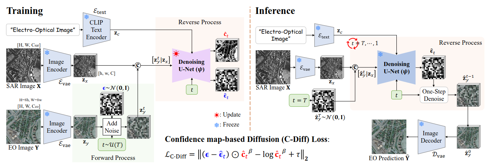

Algorithm Configuration
Select and evaluate different translation model backbones optimized for cloud-piercing reconstruction.
File Directory Path: [model]/[dataset]/[category]/1.png
Continuous Image-to-Image Validation Arena
Simulates real-world conditions by comparing polarized SAR imagery with actual, cloud-covered ground truth observations and the generated outputs.
Run the cloud removal pipeline to unlock the generated-vs-ground-truth comparison view.
Selected Model Backbone
Architecture notes and the currently selected model diagram live here so the main workspace stays uncluttered.

Transfers input SAR into a 1/8 downsampled latent vector space via VAE Encoder, conditions the reverse process using cross-attention, and produces sharp EO reconstruction.